Fisheye Projection


This is a class of projections for mapping a portion of the surface of a sphere to a flat image, typically a camera's film or detector plane. In a fisheye projection the distance from the centre of the image to a point is close to proportional to the true angle of separation.
Commonly there are two types of fisheye distinguished: circular fisheyes[*] and fullframe fisheyes[*]. However, both follow the same projection geometrics. The only difference is one of Field of View: for a circular fisheye the circular image fits (more or less) completely in the frame, leaving blank areas in the corner. For the full frame variety, the image is over-filled by the circular fisheye image, leaving no blank space on the film or detector. A circular fisheye can be made full frame if you use it with a smaller sensor/film size (and vice versa), or by zooming a fisheye adaptor on a zoom lens.
There is no single fisheye projection, but instead there are a class of projection transformation all referred to as fisheye by various lens manufacturers, with names like equisolid angle projection, or equidistance fisheye. Less common are traditional spherical projections which map to circular images, such as the orthographic (lenses commonly designated OP) or stereographic projections. Luckily, Panorama tools and Hugin can deal with most of these mentioned projections.
 is the angle in rad between a point in the real world and the optical axis, which goes from the center of the image through the center of the lens, 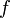 is the focal length of the lens and 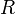 is radial position of a point on the image on the film or sensor.
is the angle in rad between a point in the real world and the optical axis, which goes from the center of the image through the center of the lens, 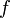 is the focal length of the lens and 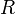 is radial position of a point on the image on the film or sensor.
| projection | math | real lenses, matching this projection |
|---|---|---|
| equidistant fisheye | 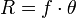 | e.g. Peleng 8mm f/3.5 Fisheye |
| stereographic | 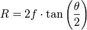 | e.g. Samyang 8 mm f/3.5 |
| orthographic | 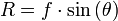 | e.g. Yasuhara - MADOKA 180 circle fisheye lens |
| equisolid
(equal-area fisheye) |
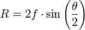 | e. g. Sigma 8mm f/4.0 AF EX, (also convex mirror) |
| Thoby fisheye | 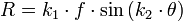
with 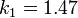 and 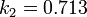 |
e. g. AF DX Fisheye-Nikkor 10.5mm f/2.8G ED
(empirical found math for this lens) |
So for example 90 degrees, which would be the maximum theta of a lens with 180 degree Field of View, f=8mm, equisolid mapping, you get R = 11.3mm, which is the radius of the image circle.
Btw, a rectilinear lens has a mapping

![[*]](http://wiki.panotools.org/File:Big_ben_circ_fisheye.jpg){kind=link}
![[*]](http://wiki.panotools.org/File:Big_ben_ff_fisheye.jpg){kind=link}
More information on fisheyes[*] and their distortions from Bob Atkins Photography
(Content partly based on a mail by Helmut Dersch which can be found at W.J. Markerink's page about fisheye analysis)